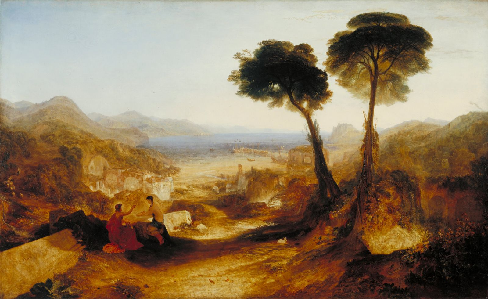

Free to read · Free to share
VATES
The Journal of New Latin Poetry
An occasional (and free!) publication that aims to bring contemporary Latin poetry to the attention of an English-speaking audience.
Image: J. M. W. Turner, The Bay of Baiae, with Apollo and the Sibyl (exhibited 1823). Tate, Turner Bequest 1856 (N00505). Public-domain painting; the image used on the old Vates blog.
Welcome to VATES
What is VATES?
VATES is an occasional (and free!) publication that aims to bring contemporary Latin poetry to the attention of an English-speaking audience. The purpose of the journal is to promote both the reading and the writing of new Latin verse in an attempt to reverse the decline of Latin poetry composition in the English-speaking world.
Published electronically in pdf format, the journal is sent free of charge to any individual or organisation who wishes to see it. They in turn are encouraged to circulate it – either electronically or by printing copies – to an even wider audience. The hope is that the very existence of such a forum for the dissemination of Latin verse will encourage readers to contribute.
The journal is not ‘academic’ in tone: it is intended for anyone with an interest in the subject. In order to make the publication as accessible as possible, featured Latin poems are accompanied by English translations and all editorial articles are in English.
The journal also features articles on the history of the genre and hints and tips about writing Latin poetry.
From the pages of Vates
A poem to begin with
index.html; the .verse style is ready for it.)
News
Vates returns
-
Vates Rediviva 2025
The brand-new 2025 edition of VATES, now under the aegis of Dr. David Money, is available here (Issue 15, PDF). You can still read back issues in the archive.
-
The new VATES
Issue #15, now under the editorship of Dr. David Money, is available to read and download here.
Read the latest issue
Issue 15 · August 2025 — free to read, download and pass on.